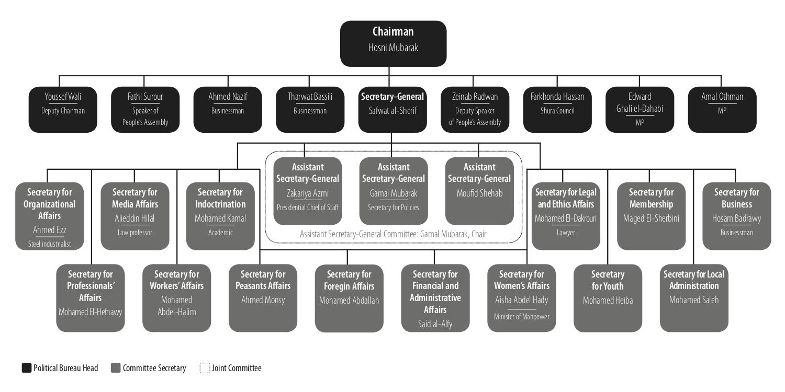

The Failed Management of a Dying Regime: Hosni Mubarak, Egypt’s National Democratic Party, and the January 25 Revolution
Management theory
meets political science:
Mubarak messed up.
Andrew Heiss, “The Failed Management of a Dying Regime: Hosni Mubarak, Egypt’s National Democratic Party, and the January 25 Revolution,” Journal of Third World Studies 28, no. 1 (Spring 2012): 155–171, no doi.
Abstract
In the weeks since the January 25 revolution there have been dozens of explanations for Mubarak’s downfall. Political scientists, diplomats, economists, sociologists, and even international aid workers have proposed theories to explain the economic, political, historical, and social causes of the Egyptian revolution. Despite the plethora of interdisciplinary theories in the press and in academia, few—if any—have analyzed Mubarak’s resignation in the light of managerial dynamics and behavior.
In addition to a ripe political environment, horrible economic conditions, and a mobilized and angry population, Mubarak’s fall from power can be attributed to his failure as a public manager. This paper analyzes Mubarak’s managerial strategy throughout the course of his presidency by (1) reviewing the structure of the National Democratic Party (NDP) and Mubarak’s relationship with it; (2) analyzing the foundational principles and assumptions of his strategy‚ both as the leader of Egypt and as the chairman of the NDP; and (3) tracing the application of that strategy and determining its effectiveness in confronting “the management challenge” over a period of 30 years.
Figure
Figure 1: NDP Leadership Organizational Chart, 2010 (based on original chart by The Arabist)

BibTeX citation
@article{Heiss:2012,
Author = {Andrew Heiss},
Issue = {Spring},
Journal = {Journal of Third World Studies},
Number = {1},
Pages = {155-171},
Title = {The Failed Management of a Dying Regime: {Hosni Mubarak}, {Egypt's National Democratic Party}, and the {January} 25 Revolution},
Volume = {28},
Year = {2012}}